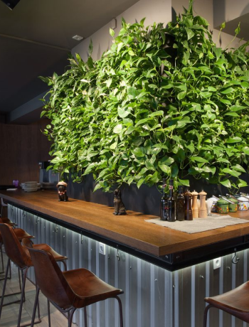
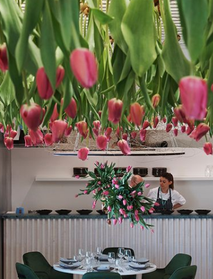
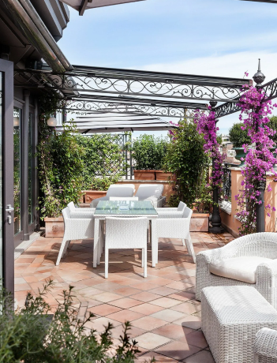
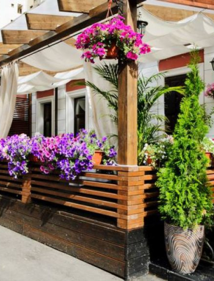

Озеленение кафе и ресторанов живыми цветами
Создайте уютную атмосферу и улучшите интерьер вашего заведения
Живые цветы и растения придают уникальность любому интерьеру, создают уют и повышают настроение ваших гостей
.png)
.png)
.png)
Почему стоит выбрать озеленение?
- Улучшение атмосферы и уюта
- Привлечение клиентов благодаря красивому оформлению
- Улучшение качества воздуха
- Экологичность и природная красота
- Повышение лояльности посетителей
Что мы предлагаем?
-

Подбор растений
для вашего
интерьера -

Разработка
и реализация
концепции
озеленения -

Уход
за растениями
и их замена -

Оформление
тематических и
сезонных
композиций
Наши работы
Название проекта
Отзывы
-
.png)
- лого
- Название заведения
- Отзыв отзыв отзыв отзыв отзыв отзыв отзыв отзыв отзыв отзыв отзыв отзыв отзыв отзыв отзыв отзыв отзыв отзыв отзыв отзыв отзыв отзыв отзыв отзыв отзыв отзыв отзыв отзыв отзыв отзыв отзыв отзыв отзыв отзыв отзыв отзыв отзыв отзыв отзыв отзыв отзыв отзыв отзыв отзыв отзыв отзыв отзыв отзыв отзыв отзыв отзыв отзыв отзыв
-
- лого
- Название заведения
- Отзыв отзыв отзыв отзыв отзыв отзыв отзыв отзыв отзыв отзыв отзыв отзыв отзыв отзыв отзыв отзыв отзыв отзыв отзыв отзыв отзыв отзыв отзыв отзыв отзыв отзыв отзыв отзыв отзыв отзыв отзыв отзыв отзыв отзыв отзыв отзыв отзыв отзыв отзыв отзыв отзыв отзыв отзыв отзыв отзыв отзыв отзыв отзыв отзыв отзыв отзыв отзыв отзыв
Как мы работаем?
- Консультация и обсуждение идей
- Подбор растений и разработка дизайна
- Реализация проекта
- Обслуживание и поддержка
Стоимость услуг
-
Наименование услуги
индивидуальный расчет -
Наименование услуги
индивидуальный расчет -
Наименование услуги
индивидуальный расчет -
Наименование услуги
индивидуальный расчет -
Наименование услуги
индивидуальный расчет
Готовы озеленить ваше заведение?
Заполните форму и специалист свяжется с вами!
Зарегестрировать картуЧасто задаваемые вопросы
Остались вопросы? Вы можете задать их, позвонив на бесплатный телефон 8 (812) 770-66-72
Как сделать заказ цветов?
Можно ли заказать доставку букета в пригород?
Как оплатить заказ?
Можно ли заказать доставку цветов к точному времени?
В какое время принимаются заказы?
Можно ли заказать анонимную доставку цветов?
В какое время доставляются заказы?
Как узнать, что букет доставили?
Сколько стоит доставка цветов?
Можно ли посмотреть на букет до того, как его вручат?
Можно ли забрать цветы самостоятельно?
Что делать, если я не знаю точный адрес получателя?
За сколько времени нужно заказывать букет?
Что еще можно добавить к букету?
Полезные советы
Статьи и советы по уходу за растениями, идеи для оформления интерьера
.png)
.png)
В современном мире успешного бизнеса важно не только качество предлагаемых услуг, но и атмосфера, в которой
находятся ваши клиенты. Живые цветы и растения становятся важной частью интерьера кафе и ресторанов,
создавая неповторимую атмосферу уюта и гармонии. Они придают вашему заведению индивидуальность,
освежают пространство и дарят положительные эмоции каждому посетителю.
Озеленение не только улучшает внешний вид вашего интерьера, но и оказывает благоприятное влияние на общее впечатление от
заведения, делая его более привлекательным для новых и постоянных клиентов
Узнайте, как мы можем помочь вам озеленить ваше заведение!
-
Почему стоит выбрать озеленение?
- Улучшение атмосферы и уюта
- Живые растения создают теплую и гостеприимную атмосферу, в которой гости чувствуют себя комфортно и расслабленно. Они помогают сделать пространство более уютным и приятным для пребывания.
- Привлечение клиентов благодаря красивому оформлению
- Зеленые уголки и стильные растительные композиции делают интерьер вашего заведения уникальным и запоминающимся. Это привлекает новых клиентов и способствует их возвращению.
- Улучшение качества воздуха
- Растения естественным образом очищают воздух, насыщая его кислородом и поглощая вредные вещества. Это не только улучшает самочувствие ваших гостей, но и создает здоровую среду в помещении.
- Экологичность и природная красота
- Озеленение помогает внедрить элементы природы в городской интерьер, добавляя естественности и свежести. Это экологически безопасное решение, которое положительно влияет на окружающую среду.
- Повышение лояльности посетителей
- Приятная и комфортная атмосфера способствует тому, что ваши гости остаются довольны и возвращаются снова и снова. Растения помогают создать незабываемую атмосферу, которая надолго запомнится вашим клиентам
-
Что мы предлагаем?
- Подбор растений для вашего интерьера
- Мы поможем вам выбрать идеальные растения, которые гармонично впишутся в стиль и пространство вашего заведения. Учитывая особенности вашего интерьера, условия освещения и климат, мы подберем растения, которые будут радовать глаз и процветать в вашем кафе или ресторане
- Разработка и реализация концепции озеленения
- Наша команда разработает индивидуальную концепцию озеленения, которая подчеркнет уникальность вашего заведения. Мы предлагаем как масштабные проекты для больших пространств, так и более компактные решения для уютных уголков. От идеи до реализации – мы обеспечим полный цикл услуг
- Уход за растениями и их замена
- Для того чтобы ваши растения всегда выглядели свежо и красиво, мы предлагаем регулярное обслуживание. Это включает полив, подкормку, обрезку и, при необходимости, замену растений. Мы позаботимся о том, чтобы ваши зеленые уголки оставались идеальными круглый год
- Оформление тематических и сезонных композиций
- Добавьте разнообразие в интерьер вашего заведения с помощью тематических и сезонных композиций. Будь то праздничное оформление или смена декораций в соответствии с сезоном, мы создадим уникальные растительные композиции, которые станут ярким акцентом вашего интерьера.
-
Как мы работаем?
- Консультация и обсуждение идей
- На первом этапе мы встречаемся с вами, чтобы узнать больше о вашем заведении, его стиле и особенностях интерьера. Мы обсуждаем ваши пожелания и идеи, а также делаем предварительный анализ условий (освещенность, влажность, температура) для выбора подходящих растений. Это помогает нам понять, каким вы видите финальный результат, и наметить основные направления будущего проекта
- Подбор растений и разработка дизайна
- На основе ваших предпочтений и характеристик помещения мы подбираем растения, которые наилучшим образом подчеркнут стиль вашего интерьера. Далее наши дизайнеры разрабатывают концепцию озеленения, включая расстановку растений, виды композиций и декоративные элементы. Мы согласуем с вами все детали, чтобы создать идеальное пространство, отражающее ваше видение.
- Реализация проекта
- осле утверждения дизайна наша команда приступает к реализации проекта. Мы доставляем растения и декоративные элементы, устанавливаем их в соответствии с разработанным планом и проводим все необходимые работы по оформлению. Каждый шаг контролируется нашими специалистами, чтобы все соответствовало высокому качеству и вашим ожиданиям
- Обслуживание и поддержка
- Чтобы ваши растения всегда оставались здоровыми и красивыми, мы предлагаем регулярное обслуживание. Наши специалисты будут следить за состоянием растений, выполнять уходовые процедуры (полив, подкормка, обрезка) и при необходимости заменять растения. Мы также предоставляем рекомендации по уходу, чтобы ваш интерьер всегда выглядел наилучшим образом.
-
Дополнительные услуги
-
Услуги флориста
Профессиональные флористы помогут вам создать роскошные цветочные композиции для особых случаев или повседневного оформления. Мы предлагаем разнообразные варианты декора, от букетов до эксклюзивных композиций.
-
Декорирование мероприятий
Озеленение и цветочное оформление вашего мероприятия – будь то свадьба, корпоратив или тематическая вечеринка – добавят изысканности и элегантности в любой праздник. Мы создадим уникальную атмосферу, которая запомнится вашим гостям надолго.
Свяжитесь с нами
Адреса наших салонов в Санкт-Петербурге
Мы всегда рады общению с Вами: